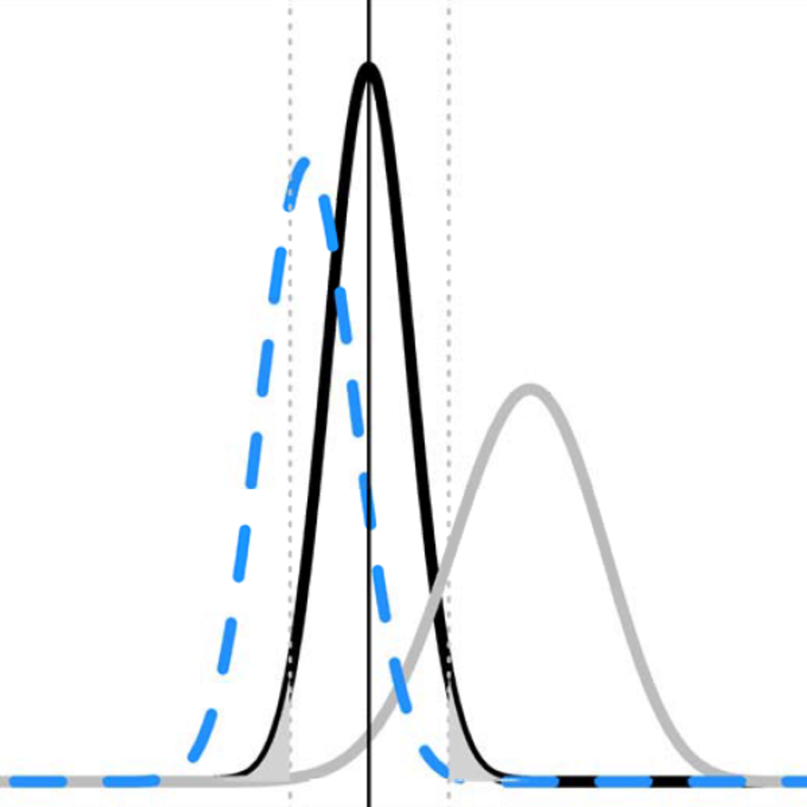

「提昇你的統計推論功力」中文資源使用說明及學習指南

中英字幕對照檔已於8/21上傳Coursera，有註冊Coursera的朋友可直接在平台觀看有中文字幕的影片。這份指南與教材的翻譯文本是繁體中文，大陸及港澳地區朋友，如果閱讀中無法習慣字體與詞彙用語，請多多見諒。
終於完成Coursera的課程「提昇你的統計推論功力」( Improving your statistical inferences )教材(每週課程說明，影片字幕)第一階段中文翻譯。這門課程是由荷蘭埃因霍溫科技大學副教授Daniel Lakens設計講授，於2016年10月上架。因為我從2015年起就訂閱Daniel的部落格「20%的統計學家」(The 20% Statistician)，所以首先是從他發佈的部落格貼文得知。當時我正在荷蘭進行訪問研究，也正在學習使用這門課程推廣的幾種統計分析方法，所以我就聯絡Daniel，願不願意讓更多中文世界的學者與學生們認識這門課程？他欣然接受這個點子，於使我們一起在OSF開了一份公開專案，開始了第一階段影片字幕翻譯計畫：翻譯並公開每週課程介紹與影片字幕，讓有興趣但英文閱聽能力有限的華文人士，可以理解課程內容，直接使用課程資源。並且也歡迎各方高手協助校正，為第二階段作業資源中文化工作做準備。
Daniel Lakens曾參與2015年轟動全球，不到40%心理學研究可被再現的「心理學再現研究專案」資料分析工作。Daneil因為自己博士班時期的原創研究無法被他人成功再現，決心深入學習多數心理學家幾乎不接觸的數理與生物統計學，他把學習成果轉化為多篇幫助心理學家改善研究設計與統計分析的論文。還以每篇論文為基礎，撰寫至少一篇部落格文章，這門課程可說是他整理個人近幾年研究與教學的精華。
我決定開這個坑有幾個理由，除了課程品質好，課程設計對習慣台灣系統，甚至是東亞國家的統計與研究方法教學系統的學生，都是全新的體驗。像是在課程裡安排的一段科學哲學的介紹，讓學習者了解Daneil為什麼主張視情況善用次數主義統計(Frequentist statistics)與貝氏統計(Bayesian statistics)的方法。課程中的不少案例是到2015年止，在學術界引起結果無法再現的研究。不曉得2015年為什麼會有「心理學再現研究專案」出現的朋友，上到第三週大概就會明白，這項專案並不是有一群心理學家故意找另一群心理學家的麻煩，而是為了重新喚起心理科學的求真精神。
除了幾部影片字幕是由朋友協力翻譯，我自己在參加2017年的SIPS研討會提昇心理科學協會(Society for the Improvement of Psychological Science (SIPS) Meeting )之前，完成了大部分的字幕初翻。除了想要當面向Daneil致意，也為準備參加會議活動做準備。結果真的派上用場，在其中一場設計新世代研究方法課程的黑客松裡，就直接取用了這門課的部分資料與作業。
上課前，要做什麼準備？
除了講師的影片語言，簡介說明，參考資料與作業測驗都是英文，對於英文程度不流利的學生有些吃力。課程內容是設定決定上課的學生，有修習初級統計，並有一兩次的研究執行與資料分析經驗。這門課不會告訴你什麼是平均數還有標準差，第一週介紹完統計方法流派之後，就立刻談_p_值的意義與誤解。如果你之前還沒有學過任何推論統計方法，不只可能看不懂影片，也不會了解作業如何下手。建議有意學習者曾修過大學的基礎統計與初階研究方法，或者已修過Coursera的任何一門基礎統計課程。
本課程的許多作業都是要實際操作R與Excel試算表軟體，多數台灣社會科學領域的學生多少有一些操作Excel的經驗，但是R可能對這群學生還是高門檻的統計語言。好在台灣有許多熱心推廣R的資料科學高手，可以先找一門自學教材上手。我推薦Wush Wu設計維護的R語言翻轉教室，先熟悉一下R的使用環境與語法，就能從課程作業了解講師希望你透過操作能學到什麼東西。這門課程作業的R真的不難，只要照著題目說明，改一兩個地方就能看到執行結果。
開始課程前，先了解各週學習重點
課程共有八週，除了最後一週是提出自己的研究計畫與同學線上互評，第一週到第七週每週有三段主要視頻、一到二件數據模擬與分析作業，以及一份當週測驗卷。每週測驗卷有A/B兩種版本，是Daniel與萊登大學博士生Tim van de Zee合作設計，要收集選修這門課程的人士學習表現，分析後做為之後改進課程內容的依據。我建議修課同學，將每週的課程資料下載，並依週次建檔，之後有用時可知如何找到需要的資源。建檔結構可參考我的github儲存庫。
每門課程都有一則簡短的課程概論，說明每段視頻與作業的重點，並列出與視頻內容有關的參考文獻。七週課程概 論的中譯初稿已在公開專案上線，強烈建議初學者先閱讀課程概論，了解自已能否從影片與作業學習到Daniel要傳達給你的資訊，判斷自已需不需要尋找同儕互助學習。每週課程影片的中英對照字幕可由公開專案下載，這系列的課程影片都可以下載觀賞，英聽不夠好的同學可以下載影片和字幕，用可外掛字幕的播放軟體觀賞。
以下簡述七週學習重點與經驗：
第一週/引言與次數主義統計：第一段介紹三種統計推論取向，後兩段的重點是討論_p_值的正確與錯誤運用方式。對於有研究經驗的同學來說，最值得仔細理解的是，有沒有曾經認為_p_值就等於研究結果型一錯誤率？有沒有以為_p_值是虛無假設成立的機率？Daniel在這週課程為你解惑。
第二週/似然值與貝氏統計：介紹似然值 與貝氏統計 ，這兩種統計推論方法在亞洲的許多大學統計課都從被納入。如果你曾在論文裡看過貝氏因子(BF)與可信區間(Cridible interval)，這週課程會給你一個初步的認識。Daniel推薦的書籍 Understanding Psychology as a Science，是第一本為心理學家寫的貝氏統計入門教科書，值得找來一讀。
第三週/有效控制推論錯誤率：延續第一週的課題，介紹有效控制型一與型二錯誤率的方法。第三段還談到如何運用這先方法，規劃可靠又有效的預先註冊研究(preregistration) 。做完這週作業與測驗，你手上正好有準備執行或規劃中的方法，可以嘗試使用預先註冊會變得如何？
第四週/效果量(effect size)專題：效果量是進行整合性分析(meta analysis)與註冊確證性研究(confirmatory research)，不可或缺的元素。你希望研究的證據力要有多高，就要先評估效果量與考驗力(power)。
第五週/良好的樣本數估計：基礎統計就會學到的信賴區間(Confidence interval)，以及決定樣本數(Sample Size)的策略。Daniel在這週讓你認清過去從教科書或課堂學習中不足夠的地方，並介紹近幾年竄起的統計品質分析工具：p-Curve。
第六週/科學哲學：不完全是統計課的一週。Daniel淺談科學哲學入門，以及理論的建構。最近Daniel的部落格文章提到，接下來心理科學將進入理論危機(Theory Crisis) ，配合閱讀能了解這一週課程內容如此安排的用意。如果你有不知如何定義虛無假設的理論意義，這週Daniel介紹他的最愛：等效測試(equivalence testing)。
第七週/開放科學：集中談論前六週偶爾提到的再現研究與出版偏誤，這是2015年200多位心理學家自願參與心理學再現研究專案的重要因素。最後一段展望能消除這些問題的開放科學 。
完成各週作業之後的學習方向
如果你有時間，建議完成第八週的互評作業。計畫要分析的資料不一定要親自收集，可以找有興趣主題的公開資料，測試你想檢驗的假設。我認為台灣學生可以透過這項作業，測試看看現在國內各公家機關的開放資料，能完成多少真正有意義的分析。
各週推薦閱讀是之後深化學習的途徑，每篇論文都值得找來閱讀，有附件資料的還能試著操作，學到就有使用的機會。我個人的最大收穫是認識被譽為二十世紀最聰明的心理學家 Paul Meehl，正在消化他於1989年講演哲學心理學(Philosophical Psychology)的課程錄影與資料。
翻譯中文字幕的動機是讓華文地區的心理科學人士，了解另一種學習及運用統計的方式，以及不同於習慣的角度看待心理學研究品質。這門課程資料不需要付認證費用，只要註冊Coursera就能全部取得，符合開放科學的精神。當然要持續深入學習，母語對有些學生可能會是限制，如果你能在生活區域找到一起學習的伙伴，建議一起定期討論作業與推薦論文。
已上線的中文翻譯初稿為各方人士貢獻，本人無法保證所有材料的翻譯品質都維持在相同水準。藉此招募有意願的高手加入協助，開啟第二階段作業資源中文化。